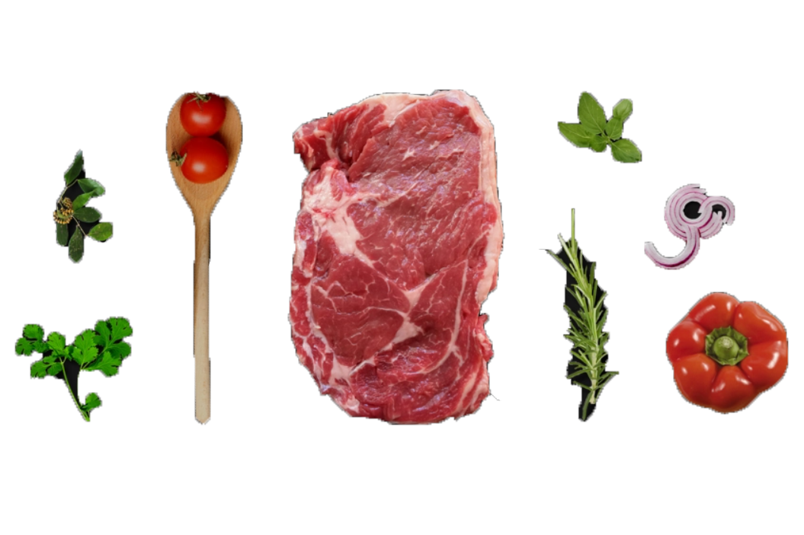

Não existe amor maior do aquele pela comida


Descubra
Nossa História
Instalado há 20 anos na zona oeste de São Paulo no bairro Jardim Paulistano,Chef Mast sai da zona de conforto e propoe uma nova experiência gastronômica, resgatando os sabores mais autênticos da cozinha brasileira sob um olhar contemporâneo, Com o comando do chef Cristiano Atala. O restaurante possui uma ambientação que se destaca pelo equilíbrio harmonioso entre o clássico e o moderno,com uma área reservada para eventos e atestam o compromisso de oferecer o máximo em conforto e exclusividade.
Descubra
Nosso Menu
Descubra
Os Melhores Ingredientes
Texto falando sobre os ingredientes de nosso restaurante. Porque podemos dizer que temos os melhores ingredientes. Ingredientes selecionados. O sabor incomparável de nossos pratos. Etc etc etc etc etc etc etc etc etc.
